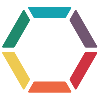

Hi!
Sascha-Oliver Prolic
 maintainer
Prooph Event Store v7.0.0
Changes & New Features
Requires PHP 7.1 (scalar type hints, return types, ...)
Event Store Interfaces
Different Event Store Implementations - no adapters
Implementation details of PDO-EventStore
Queries & Projections
Creating an event stream
$stream = new Stream(
new StreamName('test-stream'),
new ArrayIterator($events),
['some' => 'metadata']
);
$eventStore->create($stream);Appending to an existing stream
$eventStore->appendTo(
new StreamName('test-stream'),
new ArrayIterator($event)
);Loading events
$events = $eventStore->load(
new StreamName('test-stream')
);
$events = $eventStore->loadReverse(
new StreamName('test-stream')
);namespace Prooph\EventStore;
interface EventStore
{
/* more methods */
public function load(
StreamName $streamName,
int $fromNumber = 1,
int $count = null,
MetadataMatcher $metadataMatcher = null
): Iterator;
public function loadReverse(
StreamName $streamName,
int $fromNumber = PHP_INT_MAX,
int $count = null,
MetadataMatcher $metadataMatcher = null
): Iterator;
}MetadataMatcher
$event = UserCreated::with(['name' => 'John'], 1);
$event = $event->withAddedMetadata('foo', 'bar');
$event = $event->withAddedMetadata('int', 5);
var_dump($event->metadata());
// output
[
'foo' => 'bar',
'int' => 5
]MetadataMatcher
$metadataMatcher = new MetadataMatcher();
$metadataMatcher = $metadataMatcher->withMetadataMatch(
'foo',
Operator::EQUALS(),
'bar'
);
$metadataMatcher = $metadataMatcher->withMetadataMatch(
'int',
Operator::GREATER_THAN(),
4
);
$streamEvents = $eventStore->load(
$streamName,
1,
null,
$metadataMatcher
);Fetch stream metadata
$metadata = $eventStore->fetchStreamMetadata(
new StreamName('test-stream')
);Iterating over known streams
public function fetchStreamNames(
?string $filter,
?MetadataMatcher $metadataMatcher,
int $limit = 20,
int $offset = 0
): array;
Iterating over known streams using regex
public function fetchStreamNamesRegex(
string $filter,
?MetadataMatcher $metadataMatcher,
int $limit = 20,
int $offset = 0
): array;
Fetching stream categories
Given stream names:
user-123, user-234, user-345, ...todo-123, todo-234, todo-345, ...Categories are user & todo
Fetching stream categories
public function fetchCategoryNames(
?string $filter,
int $limit = 20,
int $offset = 0
): array;
Fetching stream categories using regex
public function fetchCategoryNamesRegex(
string $filter,
int $limit = 20,
int $offset = 0
): array;
Transactions
namespace Prooph\EventStore;
interface TransactionalEventStore extends EventStore
{
public function beginTransaction(): void;
public function commit(): void;
public function rollback(): void;
public function isInTransaction(): bool;
}Need event hooks?
$eventStore = new ActionEventEmitterEventStore($eventStore);
$eventStore->attach(
ActionEventEmitterEventStore::EVENT_LOAD,
function (ActionEvent $event): void {
// do something
}
);New implementations
InMemoryEventStore (for testing)
MySQLEventStore (no transaction support)
PostgresEventStore (full transaction support)
Persistence strategies in PdoEventStore (MySQL & Postgres)
namespace Prooph\EventStore\Pdo;
interface PersistenceStrategy
{
public function createSchema(string $tableName): array;
public function columnNames(): array;
public function prepareData(Iterator $streamEvents): array;
public function uniqueViolationErrorCodes(): array;
public function generateTableName(StreamName $streamName): string;
}Default provided persistence strategies
MySQLAggregateStreamStrategy
MySQLSingleStreamStrategy
MySQLSimpleStreamStrategy
Postgres...
AggregateStreamStrategy
Used for event sourcing
One stream per aggregate
SingleStreamStrategy
Used for event sourcing
One stream per aggregate type
or one stream for all aggregates
SimpleStreamStrategy
Used outside of event sourcing
Useful especially for projections
Queries &
Projections
Projections in the past
namespace Prooph\ProophessorDo\Projection\User;
final class UserProjector
{
public function onUserWasRegistered(UserWasRegistered $event)
{
$this->connection->insert(Table::USER, [
'id' => $event->userId()->toString(),
'name' => $event->name(),
'email' => $event->emailAddress()->toString()
]);
}
public function onTodoWasPosted(TodoWasPosted $event)
{
// ...
}
}Queries
namespace Prooph\EventStore\Projection;
interface Query
{
public function init(Closure $callback): Query;
public function fromStream(string $streamName): Query;
public function fromStreams(string ...$streamNames): Query;
public function fromCategory(string $name): Query;
public function fromCategories(string ...$names): Query;
public function fromAll(): Query;
public function when(array $handlers): Query;
public function whenAny(Closure $closure): Query;
public function reset(): void;
public function run(): void;
public function stop(): void;
public function getState(): array;
}function prepareEventStream(string $name, EventStore $eventStore)
{
$events = [];
$events[] = UserCreated::with([
'name' => 'Alex'
], 1);
for ($i = 2; $i < 50; $i++) {
$events[] = UsernameChanged::with([
'name' => uniqid('name_')
], $i);
}
$events[] = UsernameChanged::with([
'name' => 'Sascha'
], 50);
$eventStore->create(new Stream(
new StreamName($name),
new ArrayIterator($events)
));
}prepareEventStream('user-123', $eventStore);
$query = $projectionManager->createQuery();
$query
->init(function (): array {
return ['count' => 0];
})
->fromStream('user-123')
->when([
'user-name-changed' => function (
array $state, UsernameChanged $event
): array {
$state['count']++;
return $state;
}
])
->run();
echo $query->getState()['count']; // 49
$query->reset();
$query->run();
prepareEventStream('user-123', $eventStore);
prepareEventStream('user-234', $eventStore);
$query = $projectionManager->createQuery();
$query
->init(function (): array {
return ['count' => 0];
})
->fromStreams('user-123', 'user-234')
->whenAny(
function (array $state, Message $event): array {
$state['count']++;
return $state;
}
)
->run();
echo $query->getState()['count']; // 100
prepareEventStream('user-123', $eventStore);
$query = $projectionManager->createQuery();
$query
->init(function (): array {
return ['count' => 0];
})
->fromCategory('user')
->whenAny(
function (array $state, Message $event): array {
$state['count']++;
return $state;
}
)
->run();
// more code
// more code
$events = [];
for ($i = 51; $i <= 100; $i++) {
$events[] = UsernameChanged::with([
'name' => uniqid('name_')
], $i);
}
$eventStore->appendTo(
new StreamName('user-123'),
new ArrayIterator($events)
);
$query->run();
echo $query->getState()['count']; // 100
Projections in the past
namespace Prooph\ProophessorDo\Projection\User;
final class UserProjector
{
public function onUserWasRegistered(UserWasRegistered $event)
{
$this->connection->insert(Table::USER, [
'id' => $event->userId()->toString(),
'name' => $event->name(),
'email' => $event->emailAddress()->toString()
]);
}
public function onTodoWasPosted(TodoWasPosted $event)
{
// ...
}
}
Projections
Projections are like queries, but persistent
Projections have special additional methods
linkTo(string $streamName, Message $event)
emit(Message $event)
interface Projector
{
// some consts
public function init(Closure $callback): Projector;
public function fromStream(string $streamName): Projector;
public function fromStreams(string ...$streamNames): Projector;
public function fromCategory(string $name): Projector;
public function fromCategories(string ...$names): Projector;
public function fromAll(): Projector;
public function when(array $handlers): Projector;
public function whenAny(Closure $closure): Projector;
public function reset(): void;
public function stop(): void;
public function getState(): array;
public function getName(): string;
public function emit(Message $event): void;
public function linkTo(string $streamName, Message $event): void;
public function delete(bool $deleteEmittedEvents): void;
public function run(bool $keepRunning = true): void;
}prepareEventStream('user-123', $eventStore);
$eventStore->create(new Stream(
new StreamName('foo'),
new ArrayIterator()
));
$projector = $projectionManager->createProjection('test_projection');
// more code// more code
$projector
->fromStream('user-123')
->whenAny(
function (array $state, Message $event): array {
$this->linkTo('foo', $event);
return $state;
}
)
->run();
echo iterator_count($eventStore->load(
new StreamName('foo'))->streamEvents()
); // 50
// more code
// more code
$events = [];
for ($i = 51; $i < 100; $i++) {
$events[] = UsernameChanged::with([
'name' => uniqid('name_')
], $i);
}
$events[] = UsernameChanged::with([
'name' => 'Oliver'
], 100);
$eventStore->appendTo(
new StreamName('user-123'),
new ArrayIterator($events)
);
// more code
// more code
$projector
->fromStream('user-123')
->whenAny(
function (array $state, Message $event): array {
$this->linkTo('foo', $event);
return $state;
})
->run();
echo iterator_count($eventStore->load(
new StreamName('foo'))->streamEvents()
); // 100$prepareEventStream('user-123', $eventStore);
$projector = $projectionManager->createProjection('user_created_projection');
$projector
->fromStream('user-123')
->when([
'user-created' => function ($state, $event): void {
$this->emit($event);
}
])
->run();
Projections, nice!
But for what?
Create state in minutes without writing a new model
Indexing events
Faster event store queries
Examples
Standard-Projections
https://github.com/prooph/standard-projections
AllStreamProjection
$query->fromStream('$all')
// equals $query->fromAll(), but faster
CategoryStreamProjection
$prepareEventStream('user-123', $eventStore);
$prepareEventStream('user-234', $eventStore);
$query->fromStream('$ct-user')
// equals $query->fromCategory('user'), but faster
MessageName-
StreamProjection
$query->fromStream('$mn-user-created')
$query->fromStream('$mn-user-changed-name')
Use case:
Finding all events coming from user Sascha
var_dump($message->metadata());
// output:
array(1) {
["username"]=>
string(6) "Sascha"
}
$projector = $projectionManager->createProjection('user_sorted_events');
$projection
->fromAll()
->whenAny(function ($state, Message $event): void {
$this->linkTo($event->metadata()['username'], $event);
})
->run();
ReadModelProjections
interface ReadModelProjector
{
// some consts
public function init(Closure $callback): ReadModelProjector;
public function fromStream(string $streamName): ReadModelProjector;
public function fromStreams(string ...$streamNames): ReadModelProjector;
public function fromCategory(string $name): ReadModelProjector;
public function fromCategories(string ...$names): ReadModelProjector;
public function fromAll(): ReadModelProjector;
public function when(array $handlers): ReadModelProjector;
public function whenAny(Closure $closure): ReadModelProjector;
public function reset(): void;
public function stop(): void;
public function getState(): array;
public function getName(): string;
public function delete(bool $deleteProjection): void;
public function run(bool $keepRunning = true): void;
public function readModel(): ReadModel;
}interface ReadModel
{
public function init(): void;
public function isInitialized(): bool;
public function reset(): void;
public function delete(): void;
public function stack(string $operation, ...$args): void;
public function persist(): void;
}$this->prepareEventStream('user-123', $eventStore);
$projector = $projectionManager->createReadModelProjection(
'test_projection',
$readModel
);
// more code// more code
$projector
->fromAll()
->when([
'user-created' => function ($state, Message $event) {
$this->readModelProjection()->insert(
'name',
$event->payload()['name']
);
},
'username-changed' => function ($state, Message $event) {
$this->readModelProjection()->update(
'name',
$event->payload()['name']
);
}
])
->run();Wait.. what about this ...
ProjectionManager
Create queries & projectors
Delete / reset / stop projections
Fetch projection names
Fetch projection status
Fetch projection stream position
Fetch projection state
interface ProjectionManager
{
public function createQuery(): Query;
public function createProjection(
string $name,
array $options = []
): Projector;
public function createReadModelProjection(
string $name,
ReadModel $readModel,
array $options = []
): ReadModelProjector;
public function deleteProjection(string $name, bool $deleteEmittedEvents): void;
public function resetProjection(string $name): void;
public function stopProjection(string $name): void;
public function fetchProjectionNames(?string $filter, int $limit = 20, int $offset = 0): array;
public function fetchProjectionNamesRegex(string $regex, int $limit = 20, int $offset = 0): array;
public function fetchProjectionStatus(string $name): ProjectionStatus;
public function fetchProjectionStreamPositions(string $name): array;
public function fetchProjectionState(string $name): array;
}